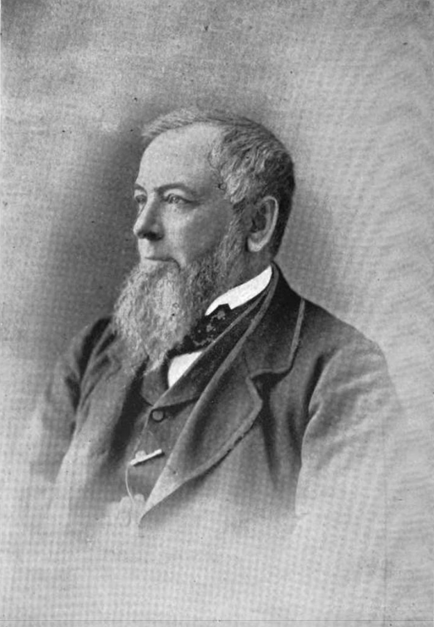
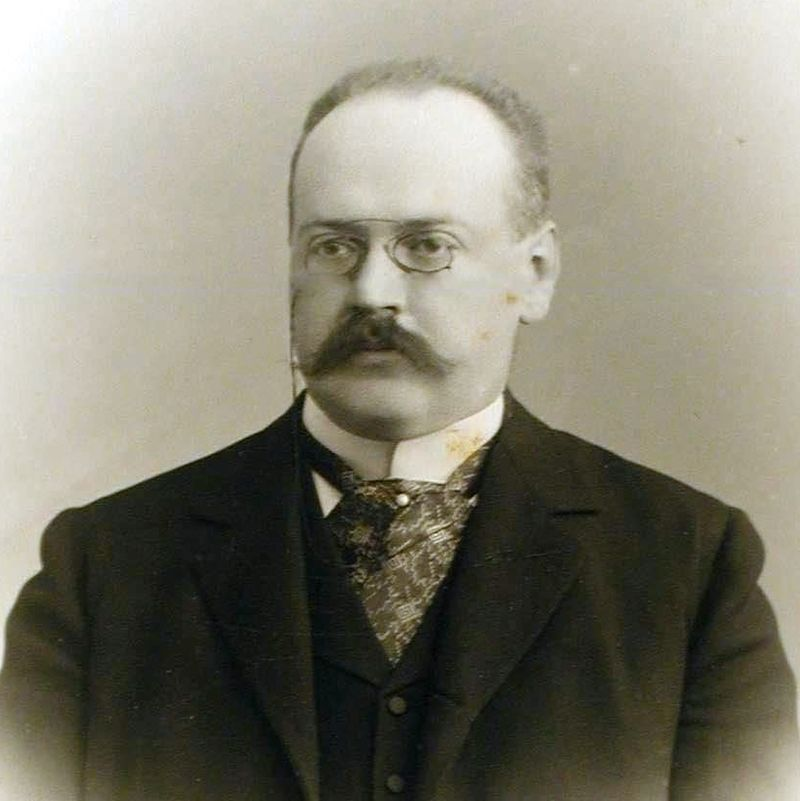
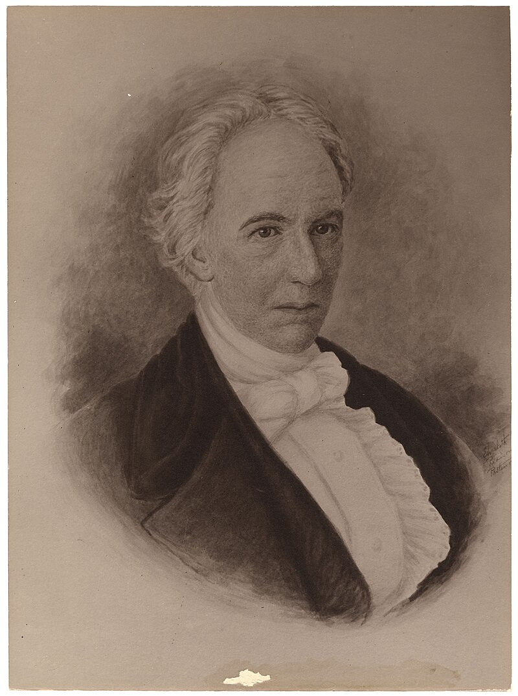
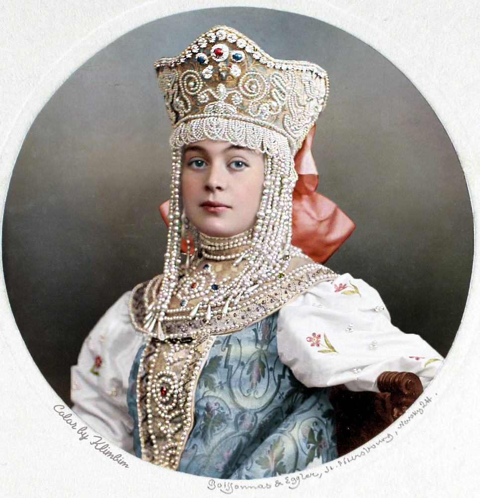

Peeps in the Family
Theo Armour ~ 2025-01-12
Introduction
Over the years, I have collected information about our ancestors. Here are some of the more notable ones.
One asks: Where are the women?
Genealogy apps
Here are some of the genealogy apps I have used:
George Armour ~ paternal great-great grandfather

Alexander Trepov ~ paternal (maternal ) great-great grandfather

Allison Vincent Armour ~ Great-great-uncle
Norman Armour ~ paternal grandfather
Walter Lowrie ~ Paternal great-uncle
Albert Cameron Burrage ~ Maternal great-grandfather
Anne Bell Burrage ~ Maternal grandmother
Theodor von Nieroth (1871–1952)
Russell & Company
Erastas Foote

James Whitehill Shirk
USS Shirk
Chandler Hovey
More
- Georgia clan
- Many Princes Kudashev
- Jean Armour Burns
Steps
There’s more. See Princess Kudasheva

To be continued.